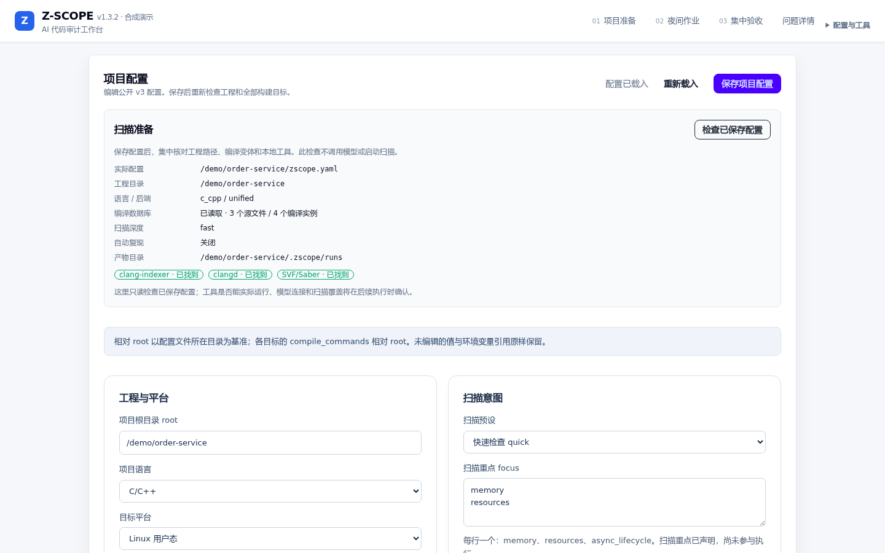
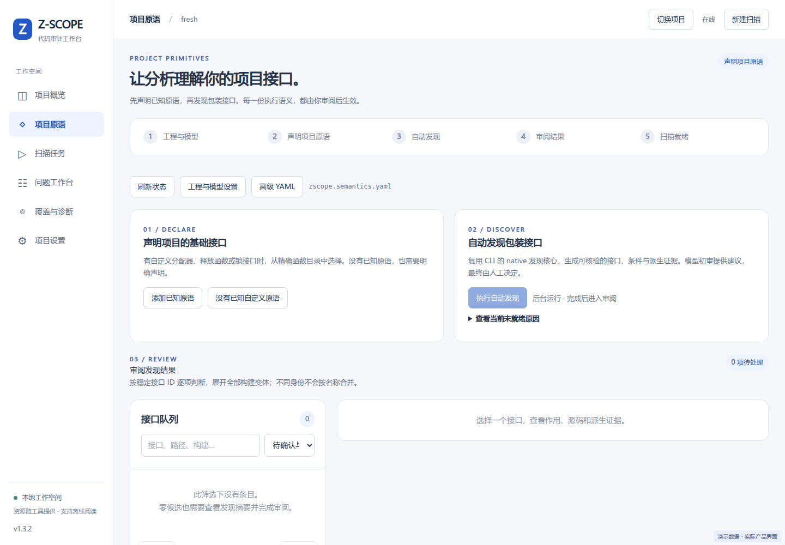

工程与模型→声明项目原语→自动发现→人工审阅→扫描就绪
旧版 · 项目配置与分散入口
2026-10-23 保留基线工程配置、业务模型和扫描入口分开。原语发现依赖 CLI 与手工编辑，没有独立的 Web 发现／审阅队列。

旧版无对应原语审阅页；此图仅用于理解入口变化。单独打开旧图 ↗新版 · 首次配置原语
实际实现 · 合成数据有自定义原语时选取精确函数实例；没有时明确声明“没有”，仍执行内置原语包装发现。

本轮还检查 1280px 与 1920px 布局；截图保留桌面与手机两个尺寸。单独打开新图 ↗操作录屏
为控制开源仓库体积，原始操作录屏（.webm）已移出源码仓库；下方截图与交互对照覆盖明确声明、阅读候选、键盘选择、刷新恢复、待审草稿、单项确认、非法批次阻止和更新入口（全部采用真实 HTTP 服务与合成发现证据，无模型调用或真实扫描）。
三个流程如何变化
| 流程 | 以前 | 现在 | 取舍 |
|---|---|---|---|
| 首次配置原语 | 编辑配置与 YAML，自行定位 USR、签名及构建。 | 同工程创建语义文档；表单选择 native 实例，自动填入身份；复杂条件保留高级 YAML。 | 多一道明确声明，换取可恢复、可解释的首次准备。 |
| 发现并审阅 | CLI 执行发现，再人工翻阅生成文件。 | 后台任务显示真实阶段；筛选、分页、源码与派生证据集中展示，逐项或勾选批次审阅。 | 提交前增加整批预检，避免部分保存。原 YAML 仍是人工配置来源。 |
| 接口更新后复核 | 需要自行判断旧决定和 native 事实是否仍适用。 | 核对源码、构建依赖、工具、根原语与证据版本；失效后重新发现，保留可复用决定并标明变化。 | 输入核验会产生本地读取开销；旧收据缺少足够证据时需要重跑。 |
逐项选择
选择仅保存在此浏览器，导出为 JSON；不会自动修改产品。正确性修复单独列在下面。
| 改动与类型 | 收益 / 取舍 | 选择 | 补充意见 |
|---|
应保留的正确性修复
- CLI、Web、MCP 和计划触发统一检查发现、审阅与当前输入；空 YAML 不代表准备完成。
- 系统和模型意见不自动确认契约；没有有效效果、精确身份和可执行条件时禁止确认。
- 文档与证据版本冲突时整批拒绝，保留草稿；历史证据不能授权当前版本。
- 扫描与原语执行互斥；覆盖缺口与人工审阅进度分别呈现，未知不显示为零或完成。